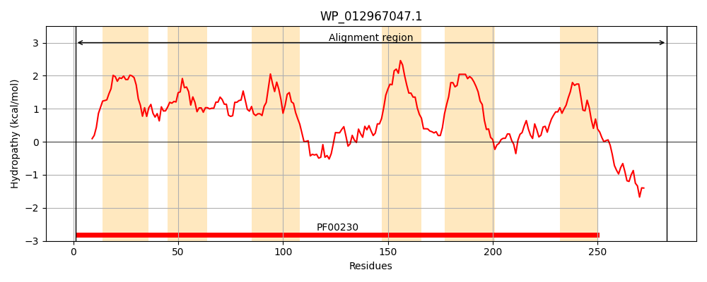
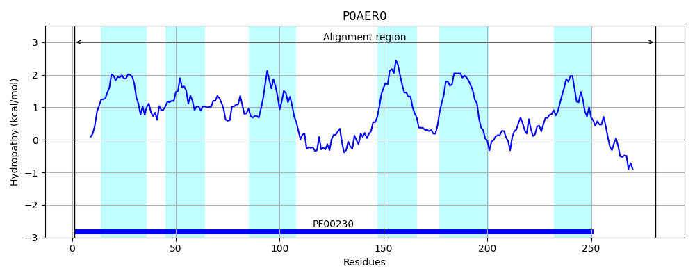
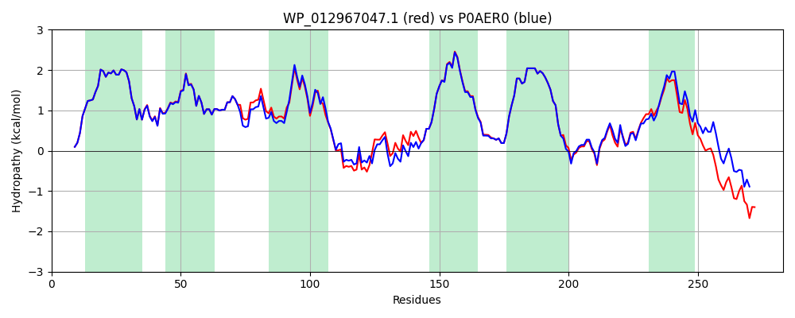

Hit Accession: P0AER0
Hit TCID: 1.A.8.1.1
Hit Description: gnl|BL_ORD_ID|8789 gnl|TC-DB|P0AER0|1.A.8.1.1 Glycerol uptake facilitator protein - Escherichia coli.
Mach Len: 283
e:0.000000
Query TMS Count : 6
Hit TMS Count: 6
TMS-Overlap Score: 6.550000
Predicted Substrates:CHEBI:2846;arsenite(3-), CHEBI:26191;polyol, CHEBI:5448;glycerol
BLAST Alignment:
Score: 1312 , Bit scores: 509 bits, E-value: 0.0e+00, Alignment length: 283, Percentage identity: 88
Query: 1 MSQTSTLKGQCIAEFLGTGLLIFFGVGCVAALKVAGASFGQWEISIIWGLGVAMAIYLTAGVSGAHLNPAVTIALWLFACFDGRKVVPFIISQFAGAFCAAALVYGLYYNLFLDYETTHHMVRGSVESLDLAGIFSTYPNPHINFVQAFAVEMVITAILMGVILALTDDGNGVPRGPLAPLLIGLLIAVIGASMGPLTGFAMNPARDIGPKAFAWLAGWGDVAFTGGKDIPYFLVPLCAPVVGAALGAFSYRKLIGRHLPCDTCVDEEQQSPSSSTTQHKASL 283
MSQTSTLKGQCIAEFLGTGLLIFFGVGCVAALKVAGASFGQWEIS+IWGLGVAMAIYLTAGVSGAHLNPAVTIALWLFACFD RKV+PFI+SQ AGAFCAAALVYGLYYNLF D+E THH+VRGSVES+DLAG FSTYPNPHINFVQAFAVEMVITAILMG+ILALTDDGNGVPRGPLAPLLIGLLIAVIGASMGPLTGFAMNPARD GPK FAWLAGWG+VAFTGG+DIPYFLVPL P+VGA +GAF+YRKLIGRHLPCD CV EE+++ + S + KASL
Sbjct: 1 MSQTSTLKGQCIAEFLGTGLLIFFGVGCVAALKVAGASFGQWEISVIWGLGVAMAIYLTAGVSGAHLNPAVTIALWLFACFDKRKVIPFIVSQVAGAFCAAALVYGLYYNLFFDFEQTHHIVRGSVESVDLAGTFSTYPNPHINFVQAFAVEMVITAILMGLILALTDDGNGVPRGPLAPLLIGLLIAVIGASMGPLTGFAMNPARDFGPKVFAWLAGWGNVAFTGGRDIPYFLVPLFGPIVGAIVGAFAYRKLIGRHLPCDICVVEEKETTTPS--EQKASL 281 | Protein Hydropathy Plots: |
|---|
|  |  |
Pairwise Alignment-Hydropathy Plot:
|
|---|
|  |